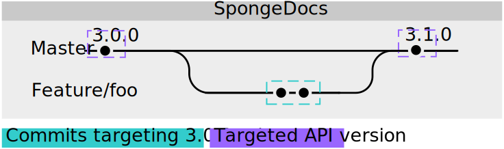

仓库分支布局策略¶
我们在 SpongeAPI、SpongeCommon、SpongeForge 和 SpongeVanilla 的仓库中使用的分支布局策略是针对 SemVer 设计的。该策略将允许我们在不破坏向后兼容的情况下发布次要更新。SpongeDocs 的更新不适用该策略。
SpongeAPI、SpongeCommon、SpongeForge和SpongeVanilla¶
不稳定分支¶
我们仓库的核心便是 bleeding 分支。几乎全部变更都会被合并入 bleeding 分支，不论这个更新是新特性、修订还是简单的漏洞修复。 bleeding 分支对应的版本总会是下一个主要版本，并带一个 -SNAPSHOT 后缀以注明此为快照版，并非最终发布版本，在发布之前仍然会有更新。（例如： 7.0.0-SNAPSHOT ）
设立 bleeding 分支主要是出于对测试变更的需求。即便是 Sponge 团队中有经验的成员，也有可能会意外导致构建失败，或是遗漏一个bug。而这 bleeding 分支的构建将会交由那些始终保持最新构建的社区成员进行测试，从而保证我们能尽快发现并解决各种问题。
稳定分支¶
稳定分支象征着一个插件开发和服务器部署的可靠平台。稳定分支中只会有向后兼容的新功能。每当 API 迎来一次主要版本更新后，就会多出一个对应的稳定分支，涵盖了已经定型的最新 API 及实现，以及未来可能出现的次要更新或修订。
每次主要更新时都会从 bleeding 分支中衍生出一个新的稳定分支，名字形如 stable-x ，其中 x 是主要更新的版本号，举个例子： stable-7 。 bleeding 将会按上文所叙述的那样得到妥善更新，并成为下一个主要版本。
那些在 bleeding 分支中经过测验，没有产生问题，并且可进入之前的主要稳定版本中的变更可被直接拣选入相关的 stable 分支中。这些变更最终会组合成一个新的次要版本，但对于紧急修复来说，可能会导致一个新的修订版本的产生。每个版本的发布都会直接导致 API 仓库中产生一个指向发布时的提交新标签。
特性分支¶
新特性或更改应在名字形如 feature/foo 或 fix/bar 这样的分支中出现。通常，新特性分支应当直接从 bleeding 分支上最近的一次提交衍生而来。但若是该分支的内容与 bleeding 分支不兼容，可考虑从 stable-x 分支上衍生出新分支；同时，在拉取请求中你应当清楚地阐明为什么你的分支不是基于 bleeding 的——例如，修复一个因Mojang更新而导致的某个被移除特性中的bug。
若新的更新仍对旧版本保持向后兼容，Sponge团队会考虑在这些变更合并入 bleeding 后直接将这些变更移植 (cherry-pick) 入若干 stable 分支中；这同时也意味着Sponge团队假定这些变更没有引发新问题。
SpongeDocs¶
SpongeDocs 则没有版本号，因为我们相信它永远不会完成，只会在不断地更新中越来越完善。然而，SpongeDocs 通常都会针对某个特定版本的SpongeAPI发布；一般，这个特定版本是指最近的发布版。
核心分支¶
SpongeDoc 的核心分支是 stable 分支。在 stable 分支上的每一笔新提交都会触发一次 全站 的重新构建。通常，在 stable 分支上的提交都是针对当前最新的 SpongeAPI 发布版的内容的更新，或是针对既有文档的错误的订正。
特性分支¶
不论是新特性描述，还是旧文本更新或重写，抑或是整个文档的改组，都需要在名字形如 feature/foo 或 fix/bar 的新分支中完成。这些分支将会在经过复核，确认满足要求后，得到合并。
当且仅当特性分支的新内容对于 当前 SpongeDocs 所指向的 SpongeAPI 发布版 来说是正确无误的时候，才有可能合并入主分支。任何针对非发布版中的特性的分支都只会在这些新特性发布后才有可能合并。然而，文档团队可能会将某个版本新内容收集到一个独立的分支上去。
稳定版分支¶
SpongeDocs uses release/x.y.z branches to publish Docs for older API versions like API 3.1.0. Older API releases
are available on their respective branches. Whenever a new API version is released, the Docs Staff will create a new
release/x.y.z branch and bump master to the new API version afterwards. A commit to a release branch also
triggers a rebuild of the older Docs release, just like on the core branch.